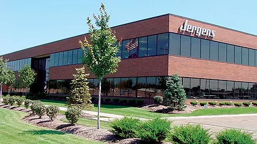

Brain Computer Interface Research Lab at UC
(Fall 2019 - Now)¶
- BCI Lab at UC, Dr. Anca Ralescu as research advisor
- Project Brief: Using electroencephalogram (EEG) instruments, find patterns in brain signals in people with/without cerebral palsy
- On-going…


R&D Electrical Engineer Co-op at Ethicon
(Summer 2019)¶
Ethicon Endo Surgery Devices in Blue Ash, Cincinnati, Ohio. Ethicon belongs to Johnson & Johnson family and they design various kinds of medical surgery devices.
Project 1 Brief
- LED PCB for a prototype unit
- I went through chematic drawing, part selections, PCB layout, design reviews, board assembly and testing
- Used microcontroller to send serial data into the registers on the chips, while using other troubleshooting methods to test the capability of the board
Project 2 Brief
- Test fixture of a prototype NFC board designed by another Co-op
- Reverse-engineered a demonstration board that uses the same NFC reading chip as the board to construct the test fixture
- Through datasheets, schematics and testing, I managed to by-pass the unnecessary components on the demo board, and drive our prototype NFC without compromise
Technical Development: This was my first time building prototype PCB, so I learned a lot from the design to testing.
Non-Technical Development: I networked with a lot of EE at my team, who gave me suggestions on choosing EE careers and developing communication skils. Their advice, together with my experience so far, had given me some different future choices that I would like to consider.
¶


Auto-Assembly Engineer Co-op at Jergens, Inc.,
(Spring-Summer 2018)¶
Jergens, Inc. is a manufacturing corporation that assembles mechanical parts such as lock pins, hoist rings as well as hardware fixtures.
Responsibilities - Supervising daily job operations on an laser engraving machine and full-auto assembly machine - Project manager on a safety system add-on to a grinder machine
Project Brief: Using B&R Automation System (or commonly known as PLC), the system prevented large part from feeding into the machine, thus ensured the safety of operators and avoided damage on the grinding wheel
Technical Development: I used my programming skills on the implementation of the system and HMI.
Non-Technical Development: I adopted tools to improve my task management skills so that I can handle both daily machine supervision and project management.
Over this Co-op, I have experienced the industrial application of electrical engineering. I was glad to learn that programming skills are more needed for automatic assembly engineers. I also found myself to be a project-orientated person. These all helped me to set up my expectations on my next Co-op.

UC MIND Lab for Protege Program
(Summer 2017)¶
- MIND Lab at UC with Dr. Rashmi Jha as research advisor
- Research Topic: Application of neuromorphic computing
- Project brief: Built a test fixture that translates an binary signal to an electrical signal close to neuron communications
- Technical Development: Lab electronics instrumentation skills including using oscilloscope, soldering, etc.
- Non-technical Development: Wrote my first technical document and manual on a system I engineered